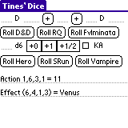
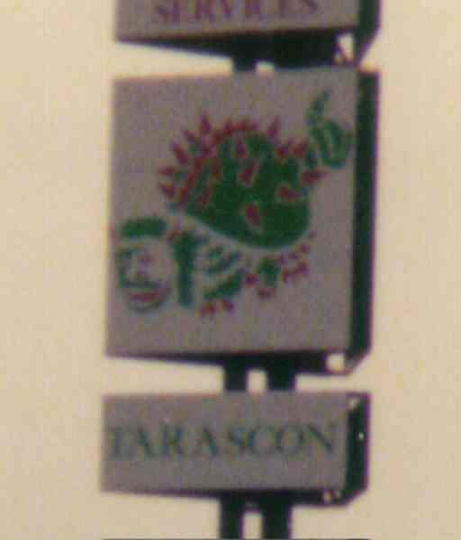

Tines' Dice v 1.1
This is a simple PalmOS (3.5 or later) application for die-rolling. You can roll pretty much any sort of dice (23d31, anyone?), but also has helper support for D&D style games (roll a d20 to hit as well as the dice you ask), RQ style (roll a d% to hit and d20 hit location plus the dice), Hero (stun, body, 3d6 to hit, 3d6 hit location) which could also be used for GURPS at a pinch (you have to do anything other than +0 or +1 adds in your head), Shadowrun (skill's worth of d6's in order) or Storyteller (skills worth of d10's in order), which could be used with Ars Magica or Godlike, though you have to do any funny die rolls or computation yourself.
New at v1.1 - die rolling for Fvlminata, which uses Roman dice with values I,III,IV and VI. The screenshot shows a pre-release version; the full 1.1 shows Roman, rather than Arabic, numerals for the raw die tolls (the result sum is still in Arabic numerals). The program doesn't support re-rolling partial hands explicitly - to do this either remember which positions (or simply how many) you want to change, and record the ones kept and add in the appropriate positions or numbers in a new roll. I'd suggest using the effect roll from the re-roll, for obvious reasons.
It's not a native program - you do need to install the Plua 1.0.17 or later run-time (about 110k) from the Yahoo plua group, and probably MathLib.prc (which Plua uses for its mathematical support, another 55kb if you haven't got it installed as a helper for any other program yet).
It is likely that you'll need MathLib at some point anyway, and it is quite it's likely that I'll be using Plua for other simple PalmOS utilities, because of its convenience.
The outer .zip archive contains an inner one, plus a CTC signature, plus an explanation in a readme1st.txt file.
The download above has the default Plua-powered large icon and the PalmOS default list icon. For a slightly larger download, you can get a version with a prettier set of icons (b&w and 8-bit colour) and the icon patching utility. The format of the archive is the same two-level zip as the unmodified program.
Glorantha
EphemerisII - An unoffical Gloranthan Planetarium Version 1.1 Coded & copyright Mr. Tines This program is a separate implementation of the ideas of Greg Stafford based upon the original Gloranthan ephemeris program by Nick Brooke, whose star position data and holy day collation were invaluable. A number of transient (Sky Storm), unpredictable (Jugger), minor (One night wish), variable (Arkat) or just plain ill-defined (Ice Palace) features are not even attempted in this model.
Standard License for Gloranthan fan material - "Glorantha is a trademark of Chaosium, Inc. Gloranthan material is copyright 1997 by Mr. Tines, Nick Brooke, and Greg Stafford. Glorantha is the creation of Greg Stafford, and is used with his permission." The above applies to the source files EphemerisII.java, EphemerisIIAnimation.java, EphemerisIIControlPanel.java, StarDome.java, and the classes contained within, and the work considered as a whole. All other software components in composition are covered by the GNU Library General Public Licence, as stated in the file Main.java in the associated archive.
D&D
Something I snapped while cycling through Provence in 1996 -
Blue Planet
The Blue PlanetRPG from Biohazard Games prides itself on hard science; some of the physics was run past the public in r.g.f.misc in summer of '96, and managed to get fine-tuned; indeed that is me in the first edition's "Special Thanks" credit. However, they didn't cover some important factors. In particular, the moons orbiting the eponymous blue planet are not stable in anything like the orbits given, with the instability showing over a period of 1-10 years. The following simulation emulates the moons of Lambda Serpentis II from the Blue Planet first edition rulebook; the parameters of the system are
- Lambda Serpentis II mass 6.799e24 kg diameter 13,750 km
- Moon a mass 9.827e23 kg, orbit radius 587400km period 47 days diameter 7,243 km
- Moon b mass 3.03e23 kg, orbit radius 825000km period 78.4 days diameter 4,960 km
Earth mass = 5.976e24 kg, diameter 12,800 km
The simulation uses a generalised N-body algorithm, converted to Java from the Fortran code by Sverre Aarseth and given in Binney & Tremaine's Galactic Dynamics, in the first edition at least. Two instances are used in this applet : the left hand display shows the system with the moons having negligible mass, and velocities for circular orbits as stated; the right has the moons with mass (and the planet with corresponding velocities to keep the centre of mass stationary in the display).
The relative angle of the two moon at the start of the simulation can be controlled by the slider below (the figure above giving the separation in degrees), with the outer moon (grey) moving around its orbit (the outer light blue circle); while the inner moon (green) remains fixed in its orbit (inner light blue circle).
The system is set running by hitting the button. The time elapsed in days is given in the line below the frame, plus the energy (in arbitrary units) of the massive system - which should remain constant, but will vary slightly due to compuational noise. A scale bar is given, and the displays rescale to fit any extreme excursione by any moon.
If a moon is ejected from the system, or collides with another body this will be logged above the status line.
Download the Java source code.